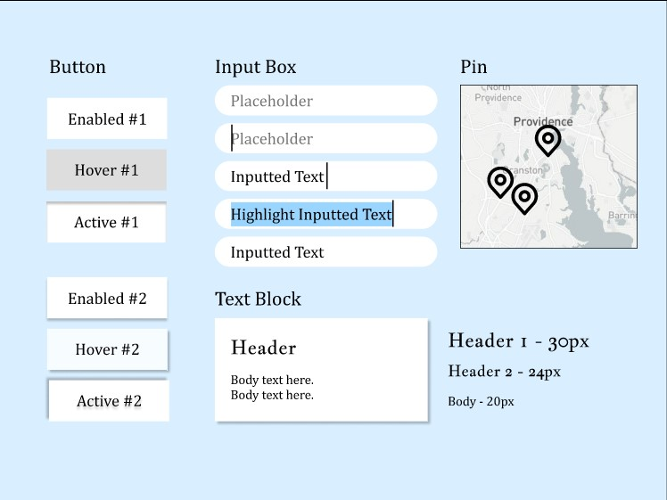

Ocean State
Hearing Aid Center
Redesigning a Website
For my UIUX course, I was tasked to redesign a public website to improve usability and design for accessibility.
Rhode Island's Ocean State Hearing Aid Center has been in service helping those with auditory impairment for over four decades. However, its website has not caught up with its age. I wanted to do a website redesign in celebration of its 45 years of service.
Assessing Usability Issues
With this in mind, it's no doubt that Ocean State Hearing often takes care of and interacts with more elderly folks. Looking at the original website however, I noticed a lot of dated design choices that may cause some confusion and difficulty in accessing the needed information, especially for customers who are not as accustomed to computer technology.
Here are some of the key problems I noticed:
- The navigation bar doesn't float along with the reader to the bottom of the page, meaning on longer pages, if a reader wants to go back to the home page halfway through reading something, they have to scroll all the way back up to the top.
- The text-size also doesn't readjust on smaller screens, making the website nearly impossible to read or click on anything on a tablet or a phone.
- The color of the headers also blends together with the beige color of the background. It doesn't nearly stand out as much as the black text.
Design Iterations
Using my observations, I created a few wireframes and prototypes for what my redesign of the website would look like. During this process, I wanted to make sure it was absolutely easy to learn and navigate, as well as accessible to as many people as possible.
The buttons needed to be large, easily readable and clickable. I made sure to make them responsive as well, so that they had different states depending on whether the mouse was hovering over them or clicking them, as that would indicate to the user clearly that it was interactable.
In the end, the interface was a little more simple than I would have preferred, but I felt it was necessary to prioritize learnability in a medical website over graphics and color.
LoFi Wireframe
Designed and sketched in Krita using a drawing tablet. I drew three iterations of what the site would look like on three different devices/monitors.
| DESKTOP | |
| MOBILE | |
| TABLET |  |
HiFi Prototype
Using my lofi wireframes, I created some prototypes using Figma, demonstrating how the page hierarchy would be formatted, as well as key features such as color and font-choices.
Here is a screenshot of my prototype with notes:

And you can access the actual Figmas here below:
✨DESKTOP✨ |
✨MOBILE✨ |
✨TABLET✨ |
Visual Redesign Style Guide
A style guide I made to help me map out what the buttons would look like in different states. I specifically wanted the link-pages and menu buttons to be as responsive as possible, making it easier for users to determine what parts of the page they can interactive and which parts they cannot.
Responsive Redesign
With the prototypes I've designed above, I've recreated the website to be more accessible and usable for people of all kinds of different backgrounds.